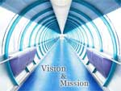

Education is an admirable thing, but it is well to remember from time to time that nothing that is worth knowing can be taught.
Mission
To serve the society and improve the quality of life by imparting high quality education in diverse fields of professional education such as Management, Information Technology, providing training, development and consultancy services to Industry; Our mission is to achieve and sustain dynamism to serve the society and improve the quality of life by imparting high quality education to enhance the capacity of individuals and fostering a conducive environment to develop the intellectual capacity, critical thinking, creativity and problem solving ability of the students.
Vision
MSL College is envisioned to be the centre of academic excellence in diverse fields of professional education with a holistic concern for quality of life, environment, society and ethics. We aim to provide education while inculcating the feeling of social responsibility, thus helping students to be successful professional.
Motive
Our vision is to become an enterprise-grade technology provider that empowers people and organizations with innovative, practical, and affordable technology. Keeping in line with our mission, we will expand into the customer market where we can benefit the general public with meaningful technology at affordable prices. To make technology more accessible and usable in real life is our vision.